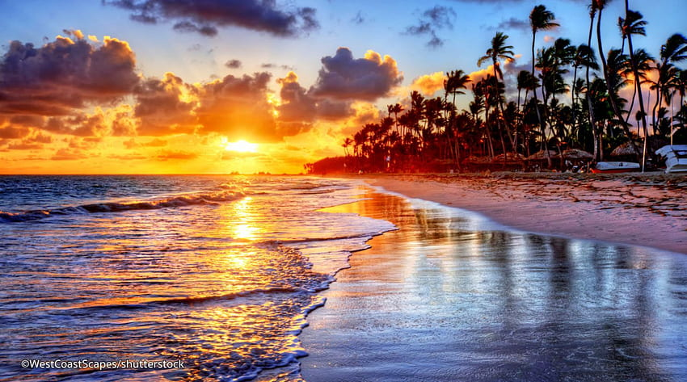
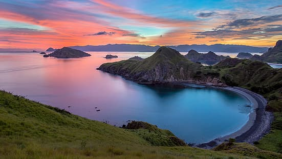
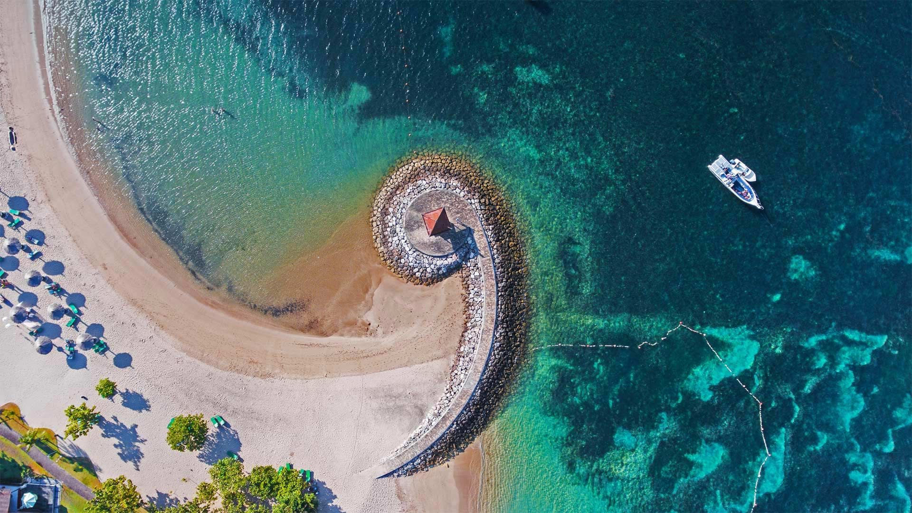

Popular Destinations

Kuta Beach
Pantai Kuta di Bali adalah destinasi populer dengan pasir putih, ombak yang ideal untuk berselancar, dan matahari terbenam yang spektakuler. Di sepanjang pantai, Anda akan menemukan warung makanan, kafe, toko suvenir, dan pusat perbelanjaan. Ini adalah tempat yang ramai dan sibuk, terutama di musim liburan, tetapi tetap menjadi tujuan favorit bagi para pengunjung yang ingin menikmati pesona pantai Bali.

Labuan Bajo Beach
Pantai Labuan Bajo adalah surga tropis di ujung barat Pulau Flores, Indonesia. Dikenal dengan keindahan alam bawah lautnya yang memukau dan pulau-pulau indah di sekitarnya. Destinasi ini sangat populer untuk menyelam, snorkeling, dan menjelajahi kehidupan laut yang kaya. Selain itu, Labuan Bajo juga menjadi pintu gerbang menuju Taman Nasional Komodo, tempat habitat terkenal dari Komodo, spesies kadal terbesar di dunia.

Nusa Dua Beach
Pantai Nusa Dua adalah destinasi pantai mewah di selatan Bali, Indonesia. Terkenal dengan pasir putihnya yang lembut dan air laut yang jernih. Pantai ini menawarkan berbagai fasilitas wisata, termasuk resor-resor mewah, lapangan golf, dan pusat kegiatan air seperti snorkeling dan parasailing. Nusa Dua juga dikenal sebagai tempat yang tenang dan ideal untuk bersantai sambil menikmati keindahan alam Pulau Bali.